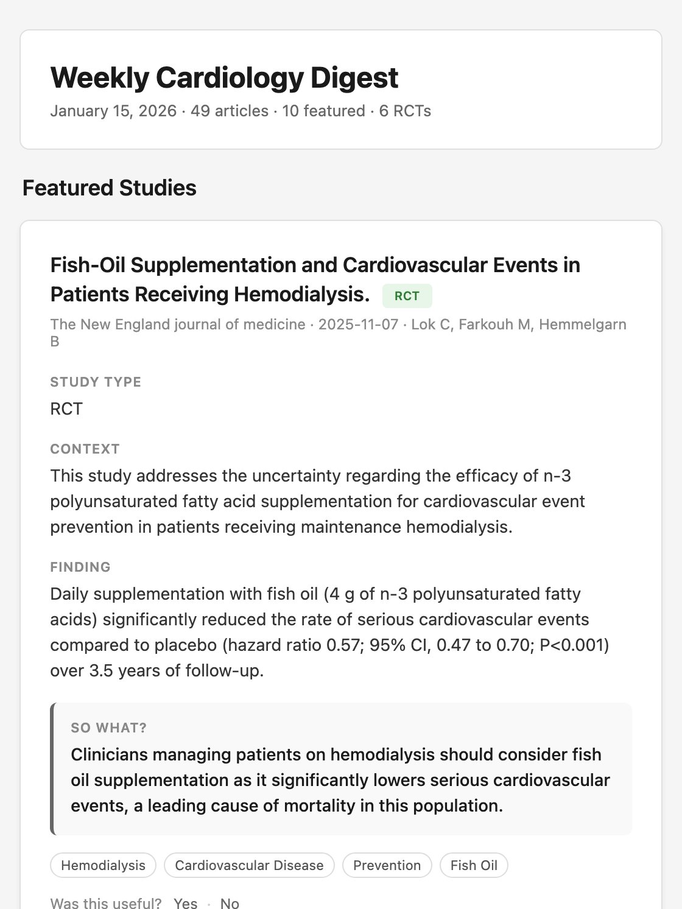

Ikechukwu Chukwudi
NHS cardiology registrar building AI tools for clinical work.
MB;BS · MRCP(UK) · Liverpool, available in London
01 · Clinote
From a spoken case to a structured log.
Clinicians describe a procedure or case in their own words. Clinote turns it into a structured logbook entry they check, edit and save. I designed and built it end to end.
- Stack
- Next.js, FastAPI, PostgreSQL, OpenAI API
- Safety
- The clinician reviews every AI draft before it is saved. Anonymised training logs only.
- Users
- 50, as of October 2026
02 · Cardiology Digest
The week’s research, in your inbox every Sunday.
A fully automated email that finds the week’s new cardiology papers, keeps the ones worth reading and summarises each in plain clinical terms. Readers mark what was useful, and that feeds back into the next issue.
- Pipeline
- PubMed → evidence filter → LLM summary → email, on GitHub Actions
- Guardrail
- Summaries draw on the abstract only, in a fixed format.
- Readers
- 70 subscribers

03 · Background
Clinic, research and model review.
Cardiology Registrar
North Cheshire and Mersey NHS Foundation Trust, since 2026
Honorary Clinical Fellow
University of Liverpool, since 2023
NIHR Academic Clinical Fellow
Cardiovascular outcomes and inequalities using real-world NHS data
Medical LLM reviewer
Outlier / Scale AI: graded clinical accuracy of model outputs, including ECG reasoning
Research
Systematic reviews and meta-analysis in Python and R
MB;BS, MRCP(UK)
Best graduating student, University of Ibadan
Let’s talk.
Happy to walk through either project or give a live demo of Clinote.
Message me on LinkedIn